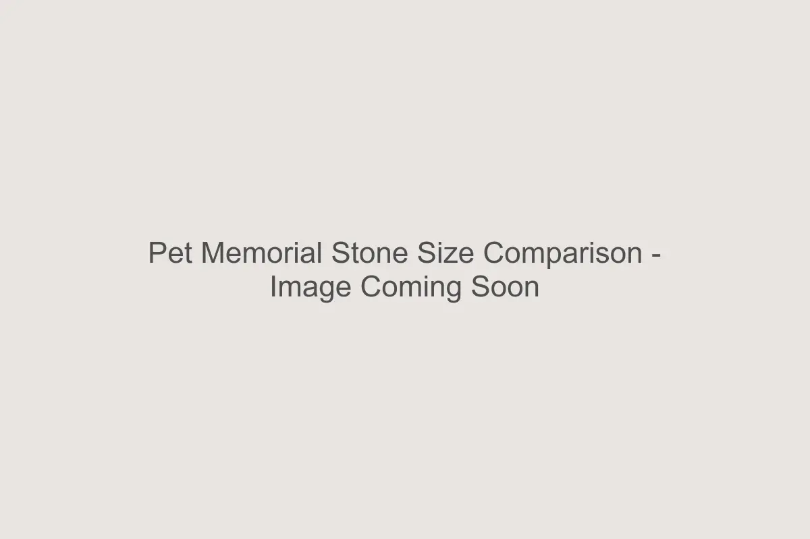

Start With the Wording, Not the Dimensions
The most common mistake when ordering a custom pet memorial stone is choosing a size first, then trying to fit a long poem or multiple dates onto it.
Engraving requires physical space. Deep, sandblasted letters need enough separation to remain sharp. If text is shrunk too small to fit a crowded layout, it becomes harder to read and less resilient to weathering over decades.
We recommend deciding what you want to say first. Is it just a name? Name and dates? Or a name, dates, and a sentiment like "Always in our hearts"? The length of your tribute should dictate the size of the stone.
Size Breakdown
3" × 2" — The Personal Keepsake
Our smallest size. This is best for a single name (e.g., "Bella") and perhaps a small paw print. It works well as a remembrance stone, a shelf keepsake, or a subtle marker in a small planter. It cannot accommodate dates or phrases.
7" × 4" — The Garden Standard
Our most popular choice for garden placements. It elegantly fits a name, birth and passing years, and a very short word or graphic (like a paw). This size feels substantial in a flowerbed without dominating the space.
10" × 6" — The Tribute Stone
This size allows for more breathing room. You can comfortably include a name, full dates (Month/Year), and a short line of text such as "Best Friend" or "Forever Loved." It offers excellent visibility from a standing distance.
12" × 8" — The Memorial Marker
Our largest standard option. Perfect for longer names, full dates, and a meaningful phrase or quote. If you have a specific epitaph in mind, see our guide on what to write on a pet memorial stone to gauge length. This size commands presence and serves well as a primary grave marker.
Why Overcrowding Reduces Longevity
Legibility is key to a lasting memorial. When letters are crowded, the natural shadow lines that make engraved text readable can blur together visually. Open space on the stone frames the name, drawing the eye to what matters most.
Placement Considerations
Consider where the stone will rest. In tall grass or ivy, a thicker, larger stone helps keep the inscription visible. On a manicured lawn or patio, a smaller profile may be perfectly appropriate. For more advice on setting your stone, read our Granite vs Cast Stone guide which touches on material weight and stability.
When Less Is More
Sometimes, a single name, deeply carved, speaks louder than a crowded paragraph. Trust the craftsmanship. A simple, well-spaced design often carries the most emotional weight and stands as a timeless tribute to your companion.
FAQ
Can I engrave on the back?
Standard pricing covers one face. Double-sided engraving is possible on certain custom
orders but requires a thicker stone for stability.
Do specific breeds need bigger stones?
Not necessarily, but long names (e.g., "Maximilian") naturally require more width than short
names (e.g., "Max").
Does font size change with stone size?
Yes. We scale the lettering to balance the surface area, ensuring the name is always the
focal point.